El disceño escénico es una disciplina que en Chile está íntimamente ligada a la formación y evolución de los teatros universitarios: Teatro de Ensayo de la Universidad Católica y, por sobre todo, Teatro Experimental de la Universidad de Chile. Es en esta última casa de estudios donde, en forma paralela a la inauguración de la carrera de Actuación Teatral, se crea en 1948 la carrera de Diseño Teatral, que resulta fundamental para la formación y el desarrollo de la materia. Una carrera que estructura la formación de la visualidad escénica en tres grandes áreas: iluminación, vestuario y escenografía, además de entregar los elementos discursivos, teóricos, metodológicos y técnicos que confluyen en esta praxis, de la que podemos reconocer exponentes tan significativos para las artes escénicas y visuales nacionales como, por ejemplo, el artista Guillermo Núñez, quien en sus inicios se desempeña paralelamente como profesor en una carrera de formación, como diseñador escénico en los montajes que perfilaron los ideales del Teatro Experimental y como jefe técnico del Teatro Nacional Chileno. Un adelantado del diseño escénico que llegó el año 1968 hasta el Metropolitan Art Museum de Nueva York con uno de sus vestuarios para la obra "El perro del hortelano", de Lope de Vega (estrenada en 1962 en el TNCH).
No es extraño encontrar diseñadores escénicos devenidos artistas visuales o viceversa. El diseño escénico es interdisciplinar por definición. La construcción que el creador piensa, diseña y materializa en el escenario está formulada a partir de la recolección de múltiples materiales visuales, sonoros o textuales que, organizados, generan nuevos universos visuales. Estos se encuentran sometidos a diversas variables que, mediadas por la mirada del diseñador, operan para la producción de sentido conjugando lo simbólico y lo material en una puesta en escena.
Por estos días, definir, dar un nombre o encasillar en un estilo la visualidad escénica nacional es una tarea compleja, ya que es un imaginario tan diverso como el número de cabezas que lo piensan. Es esta misma pluralidad y sus combinatorias de referentes la que construye el concepto de "lo chileno", la imagen de identidad sobre el escenario. Sin duda, podríamos decir que es un híbrido de transita sin problemas entre el neobarroco, el minimalismo y el hiperrealismo. Las imágenes que llenan estos universos (aquello que inspira a los diseñadores) nacen de forma ilimitada del cotidiano. Bajo la mirada del diseñador escénico todo es potencialmente material escénico, tanto el espacio físico como sus habitantes y, sin duda, los acontecimientos diarios. Es precisamente esta relación con el espacio, esta mirada sobre la ciudad y su devenir lo que convierte siempre una puesta en escena en un gesto político.
Un buen ejercicio para intentar trazar algunos puntos de conexión del diseño escénico actual es revisar los proyectos que serán parte del envío país a la próxima Cuadrienal de Praga. En él podemos encontrar la identidad revisitada a través del cuerpo y la etnia, la identidad a través de la geomorfología, el color y la textura, y la identidad a través del tejido y su trama.
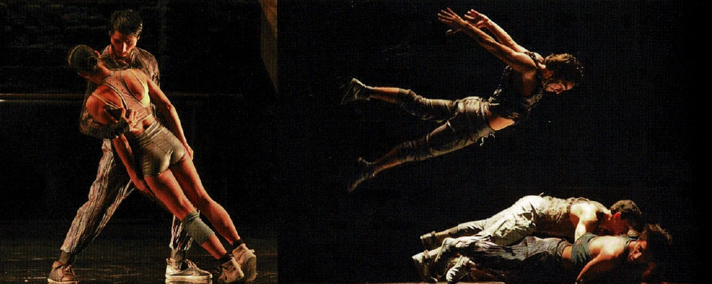 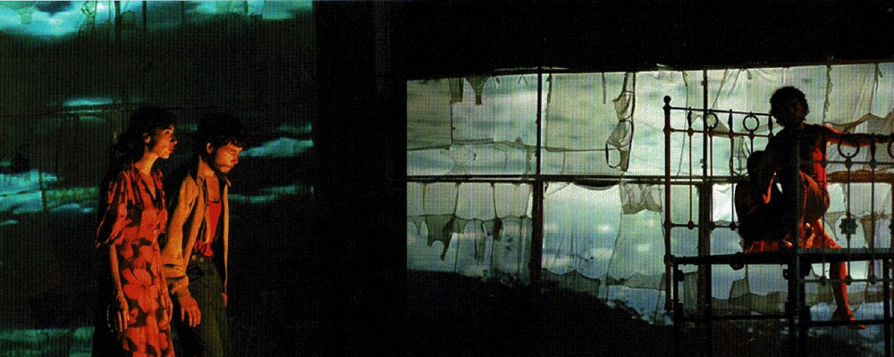 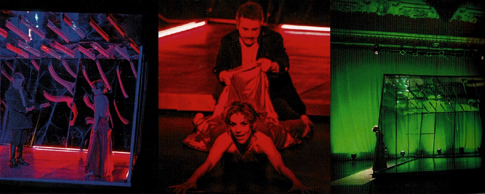Cuadrienal de Praga
La Cuadrienal de Praga es la gran instancia de reunión de todos los diseñadores escénicos a nivel mundial. Nacida después de haber sido por años parte de una sección de la Bienal de Sao Paulo, se independiza en 1967 y recibe el apoyo del Ministerio de la Cultura de la República Checa, del presidente de ese país y de la Unesco. Un total de 64 países muestran sus creaciones escénicas en diferentes espacios de la capital checa junto con una serie de actividades complementarias como seminarios, talleres y reuniones de destacados profesionales de teatro de todo el mundo. Junto con ello, la Cuadrienal es una gran oportunidad para observar y comparar el desarrollo y las tendencias recientes de la visualidad escénica. En este evento han exhibido sus trabajos personalidades destacadas como Tadeusz Kantor, David Borovsky, Ralph Koltai, Luciano Damiani, Ming Cho Lee y Achim Freyer, además de artistas contemporáneos como Heiner Goebbels, José Carlos Serroni, Robert Wilson, Julie Taymor y Anna Viebrock, entre muchos otros.
La cuadrienal se divide en tres áreas: la sección de Exhibiciones Nacionales, donde cada país presenta sus mejores diseñadores escénicos a partir de un tem elegido por el curador del país; la Sección de Escuelas, donde participan las escuelas de cada país con proyectos colectivos; la Sección de Arquitectura Teatral y Tecnología, que reúne los más atractivos edificios teatrales que se han construido desde la versión anterior. En esta ocasión habrá, además, una sección especial denominada Tribus.
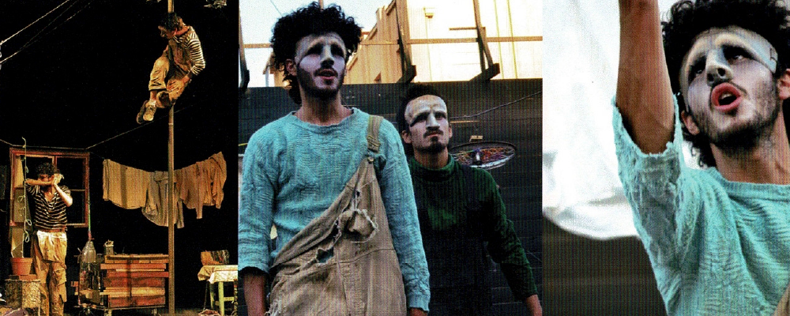 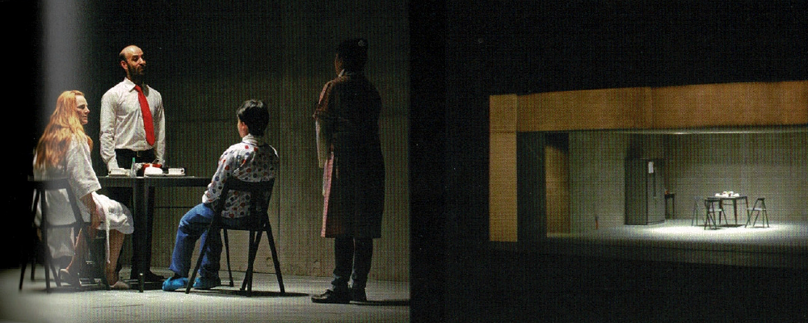 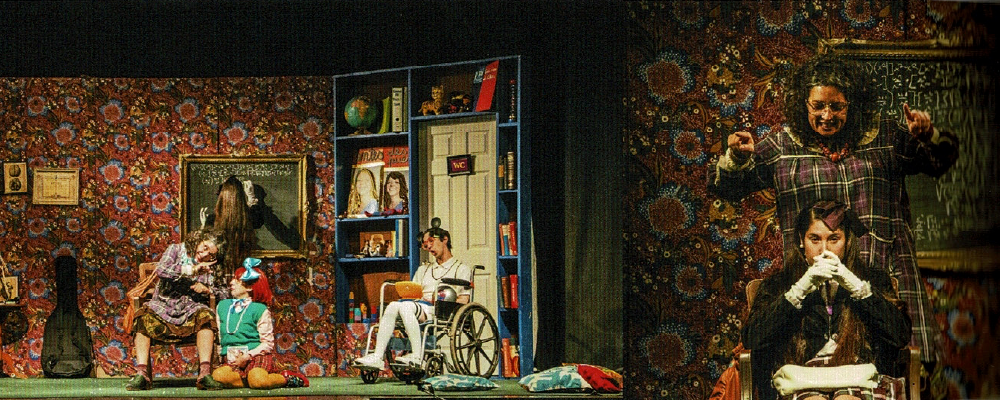En esta oportunidad nuestro país participa en tres secciones: la de profesionales, la de estudiantes y la de tribus. Para la Sección Profesionales, esta versión cuenta con el apoyo conjunto de DIRAC y CNCA, instituciones que lideraron el proceso de búsqueda de un curador por medio de un llamado a una mesa de expertos y, luego, una convocatoria abierta a los diseñadores escénicos del país para obtener el material visual de sus producciones realizadas desde la última Cuadrienal. La curatoría país está a cargo de María Teresa Lobos, quien titula la muestra "La paradoja del espectador: clima/atmósfera y diseño escénico". Un dispositivo escénico diseñado por la curadora contiene las imágenes de los 14 diseñadores escénicos seleccionados.
Por su parte, la Sección Escuelas lleva el proyecto "Corteza", una instalación que rescata los aspectos estéticos e identitarios que se desenvuelven en torno al fenómeno del terremoto, desentrañando la noción de capas de cortezas en la construcción de la tierra y relacionándolas con los estratos que constituyen una identidad y un historial de experiencias.
La tercera instancia en la que el país será representado es la Sección Tribus, curada directamente desde la Cuadrienal. Allí participan el "Proyecto Selk'nam", del colectivo artístico Complejo Conejo, y "Centrípeto", de Loreto Monsalve, ambos consistentes en vestuarios llevador por performers que intervendrán la ciudad durante todo el día a lo largo de la Cuadrienal.
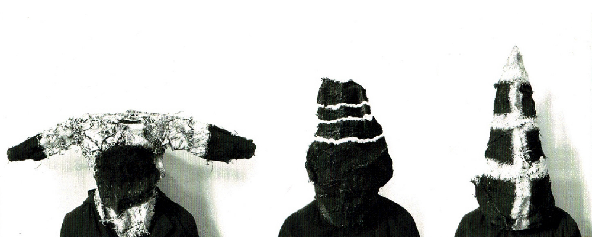Los procesos de creación y producción que distinguen la entrega de esta versión responden a la traducción material y volumétrica de conceptos que resultan identitarios desde diferentes puntos de vista y en diversos formatos. Por una parte, la muestra nacional que reúne a 14 diseñadores escénicos (con una muestra tomada de 23 obras) da cuenta de la diversidad de la creación escénica que se desarrolla en teatro, danza contemporánea, ópera y circo. Por otra parte, la entrega de escuela denominada "Corteza" trabaja desde un concepto más abstracto, analizando desde la geomorfología de nuestro país la construcción de esta historia común que surge a partir de la condición sísmica y las experiencias e historias que desde ahí se detonan y entrelazan. Este concepto se traduce materialmente en un gran tejido que se montará como una instalación en la que el público puede entrar y transitar, encontrando en su centro vestigios recogidos del sismo que poseen valor o relación con la experiencia, la cual será descrita mediante entrevistas que se podrán escuchar desde el interior.
La Sección Tribus es un área nueva, sin duda la más política de la muestra. El gran tema es precisamente el derecho a la identidad. Se trata de una forma de responder, desde la visualidad, la parformance y la puesta en escena, a la legislación promulgada en algunos países de Europa (incluyendo a la República Checa) que prohíbe usar máscaras o capuchas en actos de protesta. La curatoría de la Cuadrienal defiende el derecho a la imaginación y la presencia de la máscara en un espacio público, considerándola un objeto que trae a la realidad una capa que no era visible. La presencia de una máscara crea un espcio no sólo para la imaginación, sino también para el límite del cambio, un lugar a cruzar, una zona de intercambio potencial con los otros. Estas tribus estarán repartidas por toda la ciudad, generando un choque con el cotidiano. "Selk'nam" y "Centrípeto" son nuestras tribus. En el primer caso, un grupo de cinco performers con vestuarios de arpillera pintada a mano e intervenida con rajaduras evidencia el exterminio de una de nuestras etnias a inicios del siglo XX. Esta vez caminarán libres, bajo la forma de los espíritus que protegieron sus ancestros, por las calles de una Europa que alguna vez los vio en exhibición como parte de los zoológicos humanos.
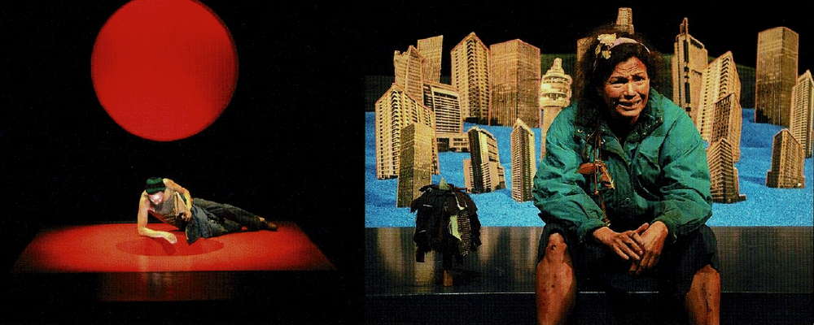 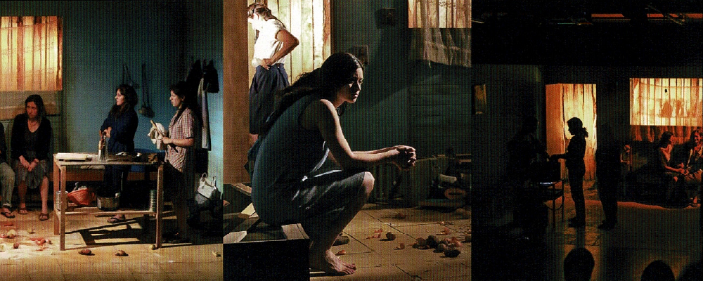 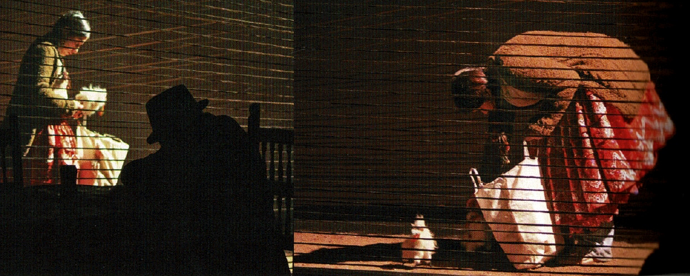 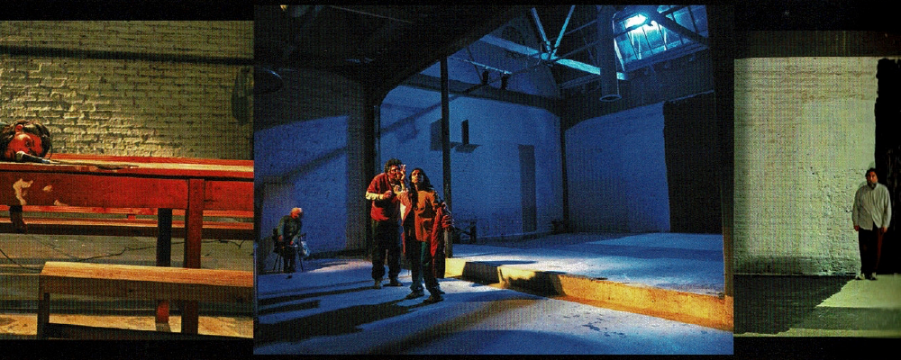 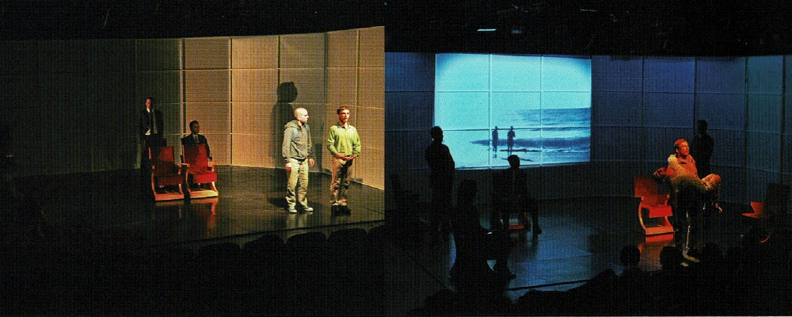 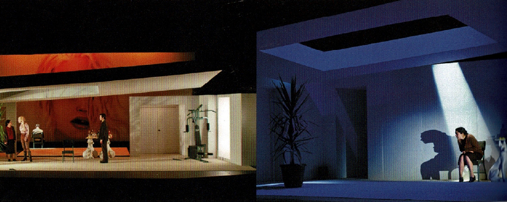 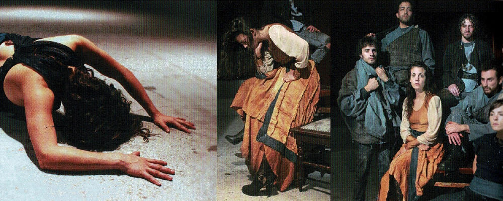 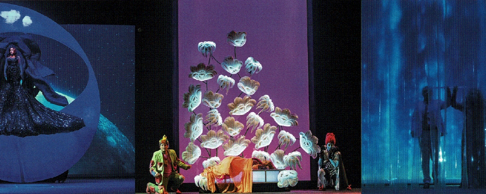Sobre Centrípeto
"Centrípeto" es un proyecto experimental que nace de los diversos interesas y formación de su creadora, la diseñadora teatral Loreto Monsalve, quien trabaja tanto en el ámbito de las artes visuales como en el del diseño escénico. El conjunto está constituido por cinco volúmenes escultóricos aplicados sobre un cuerpo humano. Aquí se ven materiles y tejidos autóctonos chilenos aplicados al vestuario escénico, los que son llevador a la video performance, uniendo artesanía y tecnología, activando así sus potenciales cualidades escénicas. Compuestos por una serie de cinco vestuarios con grandes y diversas volumetrías con un solo punto en común, los tejidos van hacia el cuerpo del intérprete como soporte y eje de la composición creando un movimiento centrípeto.
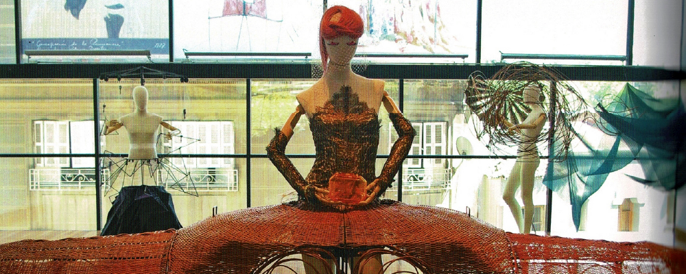Los materiales utilizados resultan ser representativos de la artesanía tradicional chilena. Se trata de mimbre, bruto y refinado, y de crin. Los motivos que llevaron a la autora a optar por estos elementos están relacionados con sus cualidades materiales: son dúctiles, se adaptan con firmeza a diversas formas y estructuran de una manera excelente. Además, son livianos y permiten crear grandes volúmenes con muy poco peso, lo que los hace portables. En términos visuales, estos materiales, bellos en todos sus estados, permiten múltiples posibilidades plásticas, funcionando en tejidos o tramas y en combinaciones o marañas, lo que brinda muy diversas posibilidades.
Otro factor dice relación con que el mimbre y el crin son materiales locales, asequibles y representativos de nuestras tradiciones, que brindan un potencial diferente al de la artesanía tradicional, dado que se pueden potenciar y complementar con la alta costura.
Monsalve señala que el concepto "centrípeto" nace en torno a la fibra que parte desde o hacia un centro, que en este caso no es el tejido mismo, sino el cuerpo humano que porta cada estructura. "Centrípeto" representa la fusión del tejido con el cuerpo humano. La trama del tejido está en torno a la silueta y el movimiento del intérprete, trascendiendo la frontera del tejido como un objeto de artesanía. Para que "Centrípeto" funcione, el tejido y el cuerpo humano tienen que estar juntos, con un mismo ritmo y, sobre todo, en movimiento.